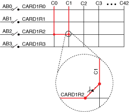
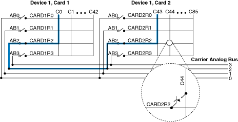

端点编程使用 NI-DAQmx 或 NI-SWITCH 自动确定两列之间的最佳路径。无论 NI SwitchBlock 设备中有多少个 NI SwitchBlock 中继卡，这种编程技术都非常简单。
按照以下步骤使用端点编程：
|
注意 必须为路由更改保留的行和模拟总线的编号和名称根据所使用的中继卡的拓扑结构而变化。有关正确的行和模拟总线名称，请参阅NI Switches Help中的设备信息。 |
以下示例展示了如何使用端点编程在由六个 NI 2810 组成的单个 NI SwitchBlock 设备内路由信号。这些示例包含一个子VI，它自动确定所有必须保留的行和模拟总线的正确命名。该 VI 可用于任何 NI SwitchBlock 设备。
有关使用 NI-DAQmx 进行单设备端点连接的示例，请访问ni.com/info并输入信息代码exv36g。有关使用 NI-SWITCH 进行单设备端点连接的示例，请访问ni.com/info并输入信息代码exi3qv。
显式路径编程是一种需要显式关闭每个单独路径的技术。此方法通过允许选择用于连接信号的行和模拟总线来提供额外的定制。由于路径中需要额外的模块，显式路径编程变得更加复杂。显式路径编程不需要为路由保留任何路径。
按照以下步骤使用显式路径编程来连接同一中继卡上的两列（cX 和 cY）：
下图显示了如何在单个继电器卡上与 NI SwitchBlock 设备建立连接。
按照以下步骤使用显式路径编程来连接不同中继卡（CardM 和 CardK）上的两个列：
下图显示了如何在单个 NI SwitchBlock 设备上的多个继电器卡之间建立连接。

以下示例显示了使用六个 NI 2810 继电器卡组合成单个 NI SwitchBlock 设备的多个继电器卡之间的连接。
有关使用 NI-DAQmx 进行单设备显式路径连接的示例，请访问ni.com/info并输入信息代码exut3a。有关使用 NI-SWITCH 进行单设备显式路径连接的示例，请访问ni.com/info并输入信息代码exzh6m。
 提交有关此主题的反馈。
提交有关此主题的反馈。 访问ni.com/support以获得技术支持。
访问ni.com/support以获得技术支持。